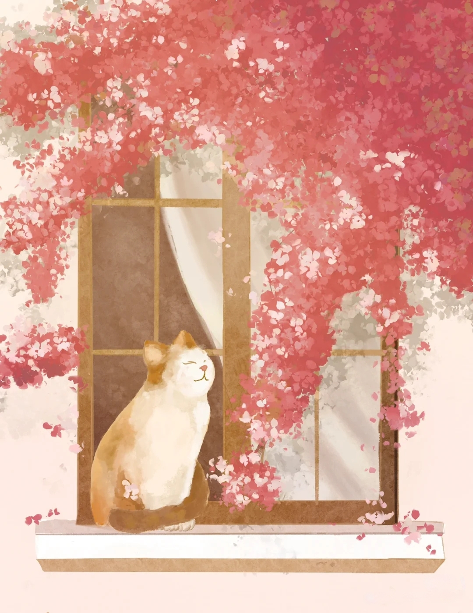
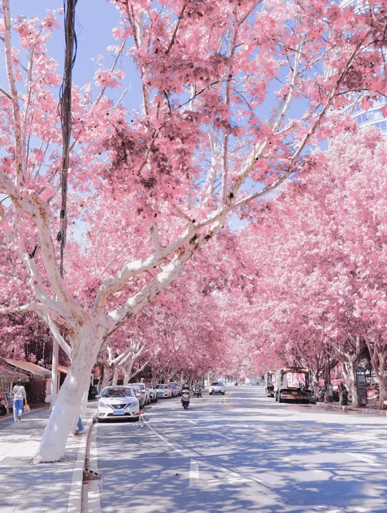
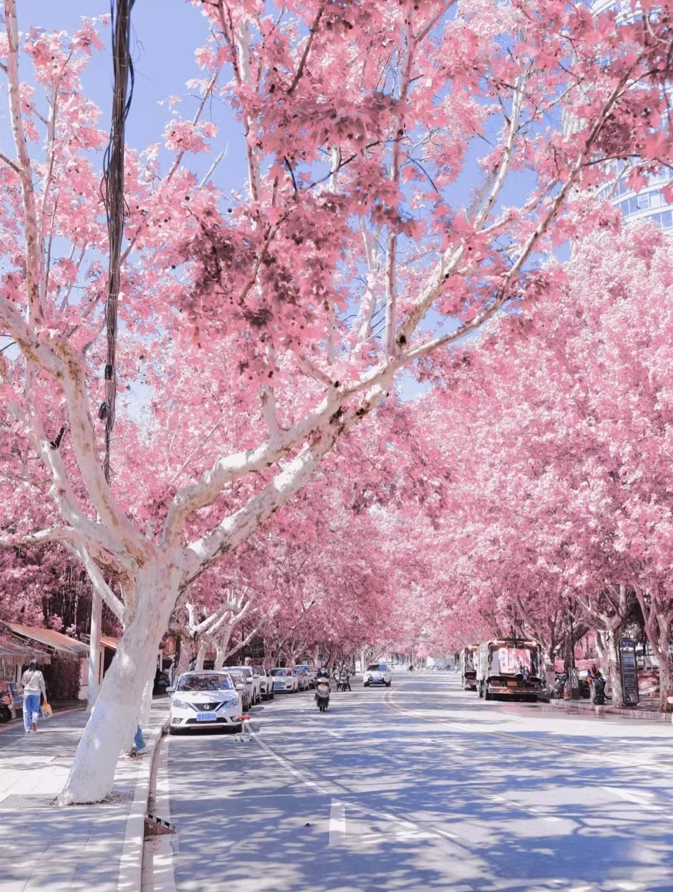

我不害怕计算机，我害怕没有计算机。
我不害怕计算机，我害怕没有计算机。I'm not afraid of computers. I'm afraid of not having computers.
每个人应该寻找适合自己的东西，做自己喜欢做的事情；做自己擅长做的事情。
Everyone should find the right thing for themselves, do what they like to do; Do what you're good at.
迭代者为人,递归者为神。
Iterator is human, recursion is god.
我愿在计算机的道路上，越走越远。
I would like to go further and further on the road of computer.
如果你不曾来过，我的希望一片空白
听不出情歌的滋味，体会不出泪水咸淡的忧伤
也不会记得拥抱，想融化在你的身旁
光明路和芒山路我终于记住了
等你的每一天，我走过好几遍
如果有下次，我认路了
不用你送我，我送你，陪着才能走完
快到第一次相遇的时间了
我就在原地，怎样我都不怪你
我习惯了等你的出现
来，不来，过去和现在都不是我的终点
我将你存进银河，满目星辉都是你
我将你揉进风尘，四季轮换都相遇
听不出情歌的滋味，体会不出泪水咸淡的忧伤
也不会记得拥抱，想融化在你的身旁
光明路和芒山路我终于记住了
等你的每一天，我走过好几遍
如果有下次，我认路了
不用你送我，我送你，陪着才能走完
快到第一次相遇的时间了
我就在原地，怎样我都不怪你
我习惯了等你的出现
来，不来，过去和现在都不是我的终点
我将你存进银河，满目星辉都是你
我将你揉进风尘，四季轮换都相遇

说做一阵风吧，有温柔也有英勇
说躲在云层里的星星都在发光，你也要加油啊说不经意间闯入生活的人，总能惊艳了岁月
说你要照顾好你黑色的头发，挑剔的胃和爱笑的眼睛说我从未觉得孤独，说的浪漫些，我完全自由市井长巷，聚拢来是烟火，摊开是人间
说喜欢日落，当黄昏落在身上，没有烟火，没有杂尘，只有光和希望 说愿你遍历山河，觉得人间值得
说躲在云层里的星星都在发光，你也要加油啊说不经意间闯入生活的人，总能惊艳了岁月
说你要照顾好你黑色的头发，挑剔的胃和爱笑的眼睛说我从未觉得孤独，说的浪漫些，我完全自由市井长巷，聚拢来是烟火，摊开是人间
说喜欢日落，当黄昏落在身上，没有烟火，没有杂尘，只有光和希望 说愿你遍历山河，觉得人间值得
“我知道你会来，淌过二月的溪流，穿过初夏的清晨，跳进晚秋的山色，然后在初冬的夜里留下一盏灯。”
“块般的飞机犹如流星，仅仅是和你一同仰望天空，平日司空见惯的风景也会变得与众不同。”
“白昼掉落人间，光影飞啸而过。我爱这闪闪发光的一切，以及生活。”
“手里的酒是前生做的梦，一饮而尽然后放下杯中酒，你是劫后余生，我来陪你做梦。”
“你就像我年少时偷吻的露珠，此后山长水远，你来赴，既做我的眼泪，又做我的湖。” 
“块般的飞机犹如流星，仅仅是和你一同仰望天空，平日司空见惯的风景也会变得与众不同。”
“白昼掉落人间，光影飞啸而过。我爱这闪闪发光的一切，以及生活。”
“手里的酒是前生做的梦，一饮而尽然后放下杯中酒，你是劫后余生，我来陪你做梦。”
“你就像我年少时偷吻的露珠，此后山长水远，你来赴，既做我的眼泪，又做我的湖。” 